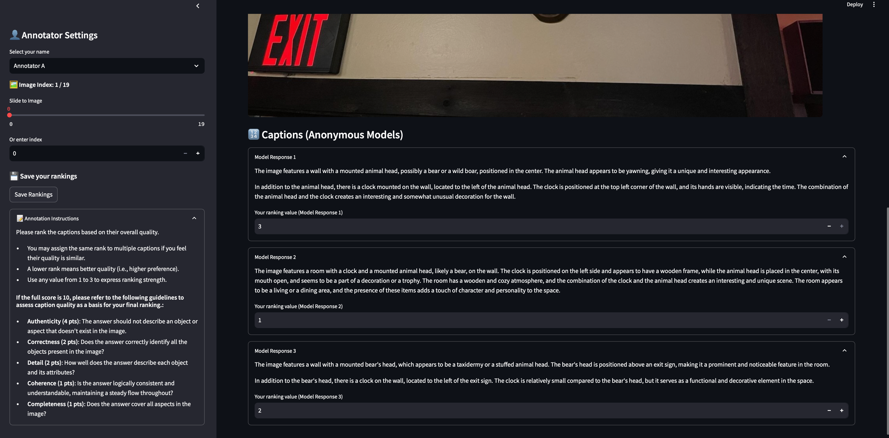
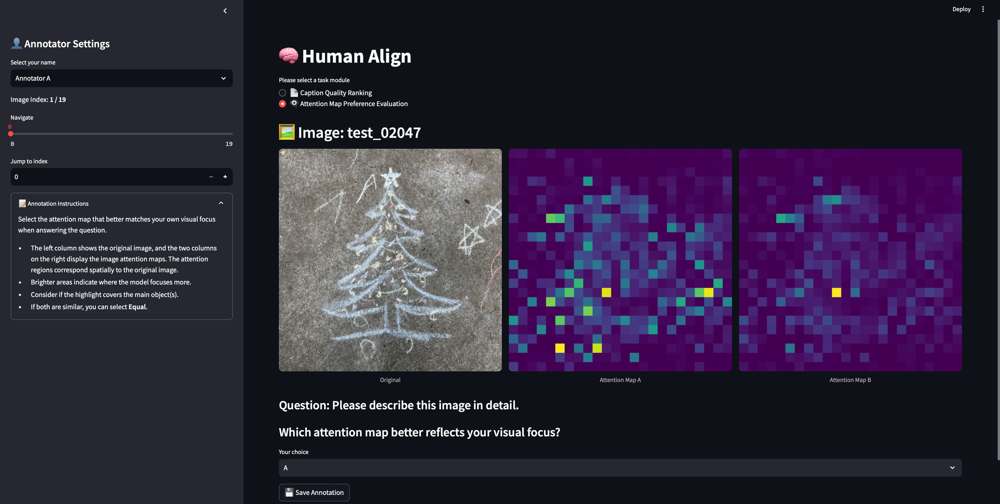

Re-Figure 1. Human annotation interface for caption quality assessment. Annotators ranked anonymized captions from three models per image using five quality criteria (relevance, accuracy, detail, coherence, and completeness). Click the image to enlarge.

Re-Figure 2. Human annotation interface for assessing attention map alignment with human focus. For each image, annotators selected the attention map that best matched their own viewing behavior. Click the image to enlarge.
×